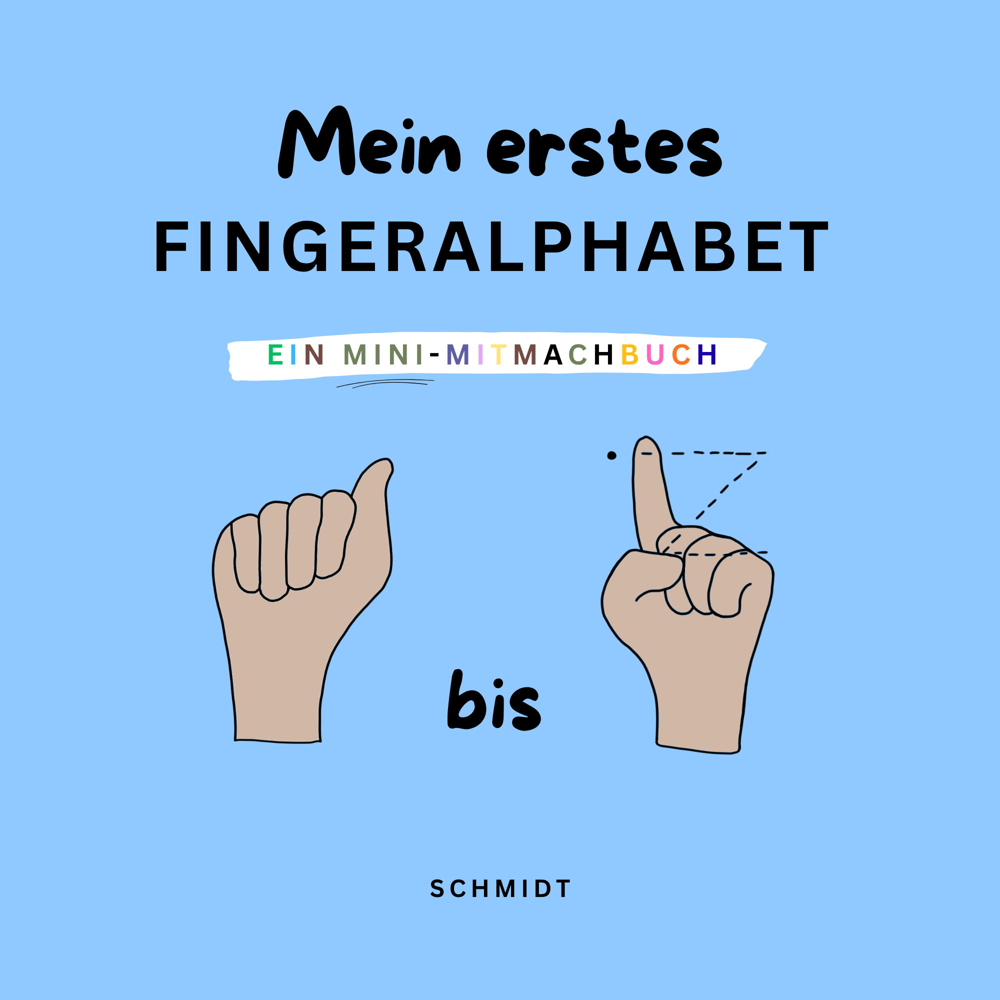

Gebärden lernen, Seite für Seite
Gebärden-ABC ist ein liebevoll illustriertes Mitmach-Bilderbuch, mit dem Kinder spielerisch das deutsche Fingeralphabet entdecken. Ob als Einstieg in die Gebärdensprache für gehörlose oder schwerhörige Familien, oder einfach, weil ihr gemeinsam eine neue Sprache entdecken wollt: Dieses Buch macht den ersten Schritt leicht.

Symbolische Darstellung des Fingeralphabets – die genauen Handformen lernt ihr Seite für Seite im Buch.
Warum ein Gebärden-Bilderbuch?
Ob gehörlose Eltern, ein gehörloses Kind oder einfach Neugier auf eine neue Sprache – Gebärden verbinden.
Für gehörlose und hörende Familien
Gestaltet für Familien mit gehörlosen Eltern oder Kindern – und für alle, die früh Gebärden als zusätzliche Sprache entdecken möchten.
Liebevoll illustriert
Jeder Buchstabe bekommt eine eigene, farbenfrohe Seite mit Tieren und der passenden Handform.
Spielerisch lernen
Große Bilder, farbenfrohe Gestaltung und ein eingebauter Spiegel zum Nachgebärden – ideal zum gemeinsamen Vorlesen ab 2 Jahren.
Das steckt im Buch
- 26 liebevoll illustrierte ABC-Seiten – ein Buchstabe pro Seite
- Großformatige Abbildungen der Handformen des deutschen Fingeralphabets
- Robustes Softcover, geeignet für kleine Kinderhände
- Ideal ab 2 Jahren, macht aber der ganzen Familie Spaß
- Format: 14 × 14 cm, 32 Seiten
Bereit für das erste gemeinsame Gebärden-Buch?
12,90 € zzgl. Versand innerhalb Deutschlands. Zahlung per Überweisung, PayPal oder Karte.
Häufige Fragen
Ab welchem Alter eignet sich das Buch?
Wir empfehlen das Buch ab ca. 2 Jahren – die großen, klaren Illustrationen eignen sich aber auch schon für jüngere Kinder zum gemeinsamen Anschauen.
Welche Gebärdensprache wird gezeigt?
Das Buch zeigt das Fingeralphabet der Deutschen Gebärdensprache (DGS), wie es in Deutschland verwendet wird.
Wie lange dauert der Versand?
Der Versand innerhalb Deutschlands erfolgt in der Regel innerhalb von 2–4 Werktagen nach Zahlungseingang.
Kann ich per Überweisung bezahlen?
Ja, im Bestellformular könnt ihr zwischen PayPal, Kartenzahlung und Überweisung wählen.